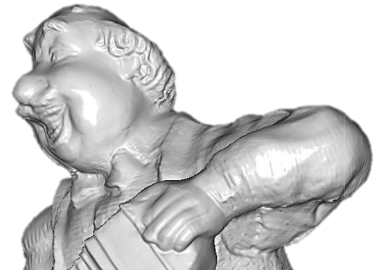
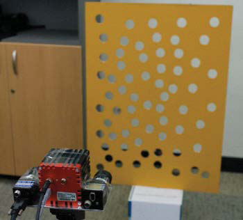

2018

Tangent Convolutions for Dense Prediction in 3D
Maxim Tatarchenko, Jaesik Park, Vladlen Koltun, and Qian-Yi Zhou
Conference on Computer Vision and Pattern Recognition (CVPR), 2018
Open3D: A Modern Library For 3D Data Processing
Qian-Yi Zhou, Jaesik Park, and Vladlen Koltun
Technical Report, arXiv:1801.09847, 2018
Real-time Head Pose Estimation using Multi-task Deep Neural Network
Byungtae Ahn, Dong-Geol Choi, Jaesik Park, and In So Kweon
Robotics and Autonomous Systems (RAS), 2018
Depth from a Light Field Image with Learning-based Matching Costs
Hae-Gon Jeon, Jaesik Park, Gyeongmin Choe, Jinsun Park, Yunsu Bok, Yu-Wing Tai, and In So Kweon
IEEE Transactions on Pattern Analysis and Machine Intelligence (TPAMI), 2018
2017
Colored Point Cloud Registration Revisited
Jaesik Park, Qian-Yi Zhou, and Vladlen Koltun
International Conference on Computer Vision (ICCV), 2017
Tanks and Temples: Benchmarking Large-Scale Scene Reconstruction
Arno Knapitsch, Jaesik Park, Qian-Yi Zhou, and Vladlen Koltun
ACM Transactions on Graphics (Proc. SIGGRAPH), 2017
Category‐Specific Salient View Selection via Deep Convolutional Neural Networks
Seong‐heum Kim, Yu‐Wing Tai, Joon‐Young Lee, Jaesik Park, and In So Kweon
Computer Graphics Forum (CGF), 2017
2016

Robust Multiview Photometric Stereo using Planar Mesh Parameterization
Jaesik Park, Sudipta N. Sinha, Yasuyuki Matsushita, Yu-Wing Tai, and In So Kweon
IEEE Transactions on Pattern Analysis and Machine Intelligence (TPAMI), 2016
Fast Global Registration
Qian-Yi Zhou, Jaesik Park, and Vladlen Koltun
European Conference on Computer Vision (ECCV), 2016
(Oral Presentation, 1.8% acceptance rate)
Refining Geometry from Depth Sensors using IR Shading Images
Gyeongmin Choe, Jaesik Park, Yu-Wing Tai, and In So Kweon
International Journal of Computer Vision (IJCV), 2016
Efficient and Robust Color Consistency for Community Photo Collections
Jaesik Park, Yu-Wing Tai, Sudipta N. Sinha, and In So Kweon
Conference on Computer Vision and Pattern Recognition (CVPR), 2016
High-quality Depth from Uncalibrated Small Motion Clip
Hyowon Ha, Sunghoon Im, Jaesik Park, Hae-Gon Jeon, and In So Kweon
Conference on Computer Vision and Pattern Recognition (CVPR), 2016
(Oral Presentation, 3.9% acceptance rate)
Vision System and Depth Processing for DRC-HUBO+
Inwook Shim, Seunghak Shin, Yunsu Bok, Kyungdon Joo, Dong-Geol Choi, Joon-Young Lee, Jaesik Park, Jun Ho Oh, and In So Kweon
IEEE International Conference on Robotics and Automation (ICRA), 2016
Depth processing algorithm of Team KAIST (winner of DARPA robotics challenge finals 2015)
2015
Accurate Depth Map Estimation from a Lenslet Light Field Camera
Hae-Gon Jeon, Jaesik Park, Gyeongmin Choe, Jinsun Park, Yunsu Bok, Yu-Wing Tai, and In So Kweon
Conference on Computer Vision and Pattern Recognition (CVPR), 2015
Multi-modal Pedestrian Detection: Benchmark Dataset and Baselines
SoonMin Hwang, Jaesik Park, Namil Kim, Yukyung Choi, and In So Kweon
Conference on Computer Vision and Pattern Recognition (CVPR), 2015
2014
High Quality Depth Map Upsampling and Completion for RGB-D Cameras
Jaesik Park, Hyeongwoo Kim, Yu-Wing Tai, Michael S. Brown and In-So Kweon
IEEE Transaction on Image Processing (TIP), 2014
Exploiting Shading Cues in Kinect IR Images for Geometry Refinement
Gyeongmin Choe*, Jaesik Park*, Yu-Wing Tai and In So Kweon
Conference on Computer Vision and Pattern Recognition (CVPR), 2014
*Equal contributions. Received 20th HumanTech Paper Award (Silver Prize), Samsung Electronics Corp.
Calibrating a Non-isotropic Near Point Light Source using a Plane
Jaesik Park, Sudipta N. Sinha, Yasuyuki Matsushita, Yu-Wing Tai and In So Kweon
Conference on Computer Vision and Pattern Recognition (CVPR), 2014
2013
Multiview Photometric Stereo using Planar Mesh Parameterization
Jaesik Park, Sudipta N. Sinha, Yasuyuki Matsushita, Yu-Wing Tai and In So Kweon
International Conference on Computer Vision (ICCV), 2013
Received 19th HumanTech Paper Award (Silver Prize), Samsung Electronics Corp.
2012

Tensor Voting Approach for Multi-View 3D Scene-flow Estimation and Refinement
Jaesik Park, Tae Hyun Oh, Jiyoung Jung, Yu-Wing Tai and In So Kweon
European Conference on Computer Vision (ECCV), 2012
Modeling Photo Composition and Its Application to Photo Re-arrangement
Jaesik Park, Joon-Young Lee, Yu-Wing Tai and In So Kweon
International Conference on Image Processing (ICIP), 2012
Identigram/Watermark removal using cross-channel correlation
Jaesik Park, Yu-Wing Tai and In-So Kweon
Conference on Computer Vision and Pattern Recognition (CVPR), 2012
2011

A Novel 2.5D Pattern for Extrinsic Calibration of ToF and Camera Fusion System
Jiyoung Jung, Yekeun Jeong, Jaesik Park, Hyowon Ha, J. D. Kim and In-So Kweon
IEEE/RSJ International Conference on Intelligent Robots and Systems (IROS), 2011
High Quality Depth Map Upsampling for 3D-TOF Cameras
Jaesik Park*, Hyeongwoo Kim*, Yu-Wing Tai, Michael S. Brown and In-So Kweon
International Conference on Computer Vision (ICCV), 2011
*Equal contributions.